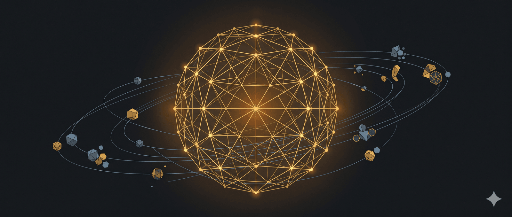

Nicolai Tangen is the CEO of Norges Bank Investment Management, the world’s largest sovereign wealth fund. He is responsible for managing $2.1 trillion. That’s roughly 1.7% of every listed company on earth.
Featured clips

American vs. European Mindset

Can You Teach People to Change Their Minds?

What’s Gotten Harder in Investing?

Slowing Down Decisions
In this episode, we explore the intersection of massive wealth, high-speed decision-making, and the psychological traits required to survive the AI revolution.
Available Now: YouTube | Spotify | Apple Podcasts | X | Transcript
+ Check out the Granola Notes of this episode.
Tiny Lessons
-
The faster you reply, the less you need to say. If you reply in a minute, you can say two words. If you wait a day, it’s a paragraph.
-
Overanalyzing doesn’t improve the outcome. It just makes you more confident about the outcome.
-
“If you have really high ambitions, you achieve great things even if you fail. If you have low ambitions, you achieve nothing even if you succeed.”
-
“You call it gut feel, nobody believes in it. You call it pattern recognition, a lot of people believe in it.”
-
Repetition is persuasive.
-
“Why make the same mistakes when there are so many to choose from? Find some new ones.”
-
Take the same amount of risk after a win and a loss.
-
“Things shouldn’t take longer than they need to take.”
-
Doing nothing is often the best option.
-
Speed and agility are the only hedge in a world you can’t predict.
-
Be impenetrable against social pressure and instant in responding to evidence.
-
The people who feel weird, different, and misunderstood are the ones who change the world.
-
Changing a culture is a ten-year project. If you think you’re halfway done in two, you haven’t started.
-
Asking for advice makes people think you’re smart because you are clever enough to recognize how clever they are.
-
“If you’re not curious, you’re not going to listen.”
-
“I would inject AI everywhere. I would just go all in.”
-
“It’s difficult to find people who are really contrarian now because you need to live in a space where people don’t agree with you.”
-
“You don’t have to be disliked even though people disagree with you.”
-
You can’t please everyone. Even if you are right, 10% of people will disagree with you.
-
The source of most of our poor decisions is blind spots.
-
“I don’t think you should profit from people who have a tough time.”
-
“Wealth is basically created by owning one or two really good assets, and then you just hold onto it for the very long term.”
🔍 Phân tích bài viết
📌 Tóm tắt ý chính
Nicolai Tangen — người điều hành quỹ đầu tư quốc gia Na Uy trị giá $2.1 nghìn tỷ — tin rằng trong thế giới biến động nhanh do AI tạo ra, tốc độ và linh hoạt là lợi thế duy nhất có thể bảo vệ bạn. Tham vọng cao ngay cả khi thất bại vẫn đem lại kết quả tốt hơn tham vọng thấp dù thành công. Quyết định tốt đến từ nhận biết pattern, không phải phân tích quá mức. Sự tò mò và cởi mở với bằng chứng — không phải áp lực xã hội — là nền tảng của tư duy phản biện thật sự. AI nên được tiêm vào mọi nơi, càng sớm càng tốt.
🗺️ Mindmap
💡 Insight & Góc nhìn đa chiều
Nghịch lý của overanalysis: Tangen chỉ ra điều mà hầu hết tổ chức không dám nói thẳng — phân tích nhiều hơn không cải thiện kết quả, nó chỉ tăng sự tự tin vào kết quả đó. Đây là cái bẫy rất phổ biến trong quản trị doanh nghiệp lớn: họp thêm, báo cáo thêm, nhưng chất lượng quyết định không tốt hơn.
Ai được lợi từ triết lý này:
- Các nhà đầu tư/founder chịu chấp nhận rủi ro sớm và điều chỉnh nhanh hơn là hoạch định dài
- Những người “weird, different, misunderstood” — Tangen xác nhận đây là nguồn đổi mới thật sự, không phải người tuân thủ consensus
Ai bị thiệt:
- Các tổ chức lớn, cồng kềnh với quy trình phê duyệt nhiều tầng — họ không thể agile theo kiểu Tangen nói
- Nhà đầu tư ngắn hạn theo đám đông — quỹ NBIM giữ tài sản dài hạn, ngược với văn hóa lướt sóng
Điều ẩn sau bề mặt: Tangen đang nói về tư duy của người giàu thật sự — tài sản tạo ra bằng cách giữ 1–2 tài sản tốt trong thời gian rất dài, không phải bằng giao dịch liên tục. Điều này hoàn toàn ngược với những gì phần lớn nhà đầu tư nhỏ lẻ đang làm.
⚖️ Phản biện
“Speed is the only hedge” — Luận điểm này đúng với tổ chức linh hoạt nhỏ, nhưng chính Tangen đang điều hành một quỹ $2.1 nghìn tỷ. Quỹ lớn đến mức di chuyển thị trường khi ra vào vị thế — họ không thể thực sự agile. Thực tế NBIM ra quyết định theo ủy ban, quy trình nghiêm ngặt, kiểm toán liên tục. Nghịch lý: ông nói về tốc độ nhưng tổ chức ông quản lý bị ràng buộc bởi governance của Nhà nước Na Uy.
“Ambition cao luôn tốt hơn” — Nghiên cứu hành vi cho thấy tham vọng không thực tế là một trong những nguyên nhân chính của burnout, bỏ cuộc sớm, và ra quyết định liều lĩnh. Cal Newport hay Adam Grant đã chỉ ra rằng passion/ambition không đủ — cần kỹ năng nền và sự kiên nhẫn tích lũy.
Sampling bias: Những bài học này đến từ một người có xuất phát điểm cực kỳ đặc biệt (hedge fund manager châu Âu, học Oxford, điều hành quỹ quốc gia). Rất khó áp dụng toàn bộ cho người bình thường.
❓ Câu hỏi mở
- Liệu các quỹ đầu tư nhà nước lớn (như NBIM) có thực sự có thể “inject AI everywhere” mà không xung đột với nghĩa vụ fiduciary và minh bạch với công chúng không?
- Khi AI làm pattern recognition tốt hơn con người, vai trò của CEO quỹ đầu tư sẽ trở thành gì — người đặt câu hỏi hay người phê duyệt câu trả lời của máy?
- “Changing culture is a 10-year project” — nhưng trong kỷ nguyên AI, các công ty có còn tồn tại đủ 10 năm để hoàn thành việc đó không?
🇻🇳 Liên hệ Việt Nam
Quỹ đầu tư và thị trường vốn VN: VN chưa có sovereign wealth fund thật sự (SCIC chỉ quản lý cổ phần nhà nước, không phải wealth fund chủ động). Mô hình NBIM — tách bạch chính sách tài khóa và đầu tư, quản lý bởi chuyên gia độc lập — là bài học cho VN khi tích lũy dự trữ ngoại hối và nguồn thu từ tài nguyên.
Tư duy đầu tư dài hạn: Thị trường chứng khoán VN (VN-Index) vẫn bị chi phối bởi nhà đầu tư F0 ngắn hạn, lướt sóng theo tin tức. Triết lý Tangen — nắm 1–2 tài sản tốt dài hạn — đối nghịch hoàn toàn với văn hóa đầu tư phổ biến tại VN.
AI và lao động VN: Lời khuyên “inject AI everywhere, go all in” có hàm ý sâu với thị trường lao động VN — đặc biệt ở các ngành gia công, sản xuất, văn phòng đang dần thấy AI thay thế công việc lặp lại. Người lao động VN cần chủ động học dùng AI thay vì chờ bị thay thế.
📖 Giải thích thuật ngữ
- Sovereign Wealth Fund (Quỹ tài sản quốc gia): Quỹ đầu tư do chính phủ sở hữu, dùng tiền từ dự trữ ngoại hối hoặc thu ngân sách để đầu tư dài hạn. Na Uy dùng tiền bán dầu mỏ để lập NBIM — như “ống heo khổng lồ” của đất nước.
- Pattern recognition (Nhận diện mẫu): Khả năng nhận ra quy luật lặp lại từ kinh nghiệm tích lũy — não người làm điều này vô thức. Khác với “gut feel” vì có cơ sở dữ liệu, dù chủ nhân không giải thích được rõ ràng.
- Fiduciary duty (Nghĩa vụ ủy thác): Trách nhiệm pháp lý và đạo đức phải hành động vì lợi ích tốt nhất của người mà mình đại diện (ở đây là dân Na Uy). Vi phạm fiduciary duty có thể bị kiện.
- Contrarian (Nghịch chiều): Người cố tình đưa ra quan điểm ngược với đám đông, dựa trên phân tích độc lập chứ không phải phản ứng cảm xúc.
- Agility (Linh hoạt tổ chức): Khả năng thay đổi hướng đi nhanh khi thông tin mới xuất hiện — khác với sự ổn định, ưu tiên điều chỉnh nhanh hơn là bám kế hoạch ban đầu.